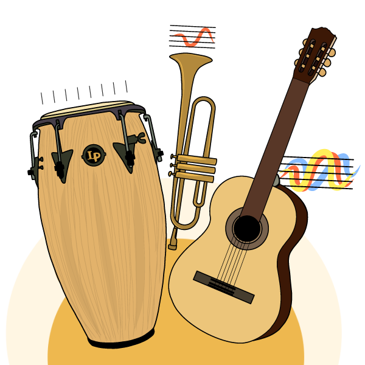

Variedad de Música
La música existe prácticamente desde los orígenes del ser humano. Actualmente es una forma de expresión para cada persona y una manera de manifestar nuestros sentimientos. Existen muchos géneros musicales con ritmos y letras diferentes; es un movimiento que nos ayuda a estar más conectados y más alegres.
El ritmo es la repetición dentro de una composición. Existen varios tipos, como:
Ritmo por repetición: Es el más simple. Consiste en repetir indefinidamente el mismo ritmo en una dirección determinada, conservando siempre su tamaño, forma y distancia.
Ritmo por alternabilidad: Se emplean dos o más elementos distintos que se alternan en el mismo orden y dirección, generando contraste y variedad.